All reports →
Cataraqui Building Supplies Capital Restructuring Case
Rapid growth had strained working capital, forcing the company to rely on expensive trade credit and exposing the owner to significant personal guarantees. The work reframed the problem away from growth optimization and toward risk containment, liquidity protection, and family alignment. The recommendation emphasized restructuring working capital and financing in a way that reduced personal exposure while preserving operational flexibility, recognizing that financial prudence mattered more than maximizing short term expansion.
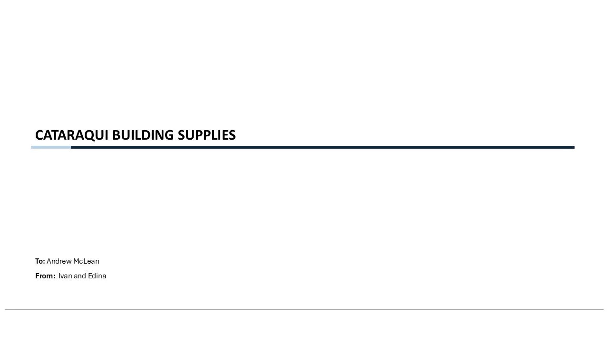
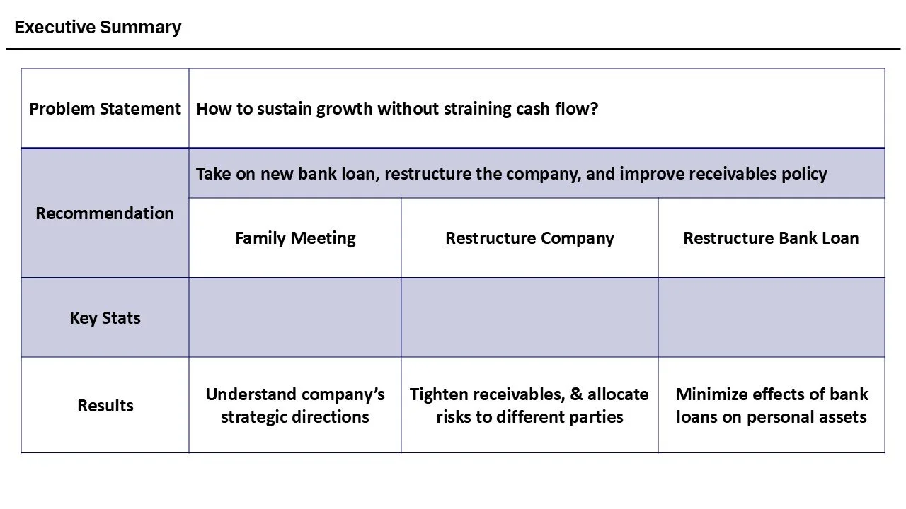
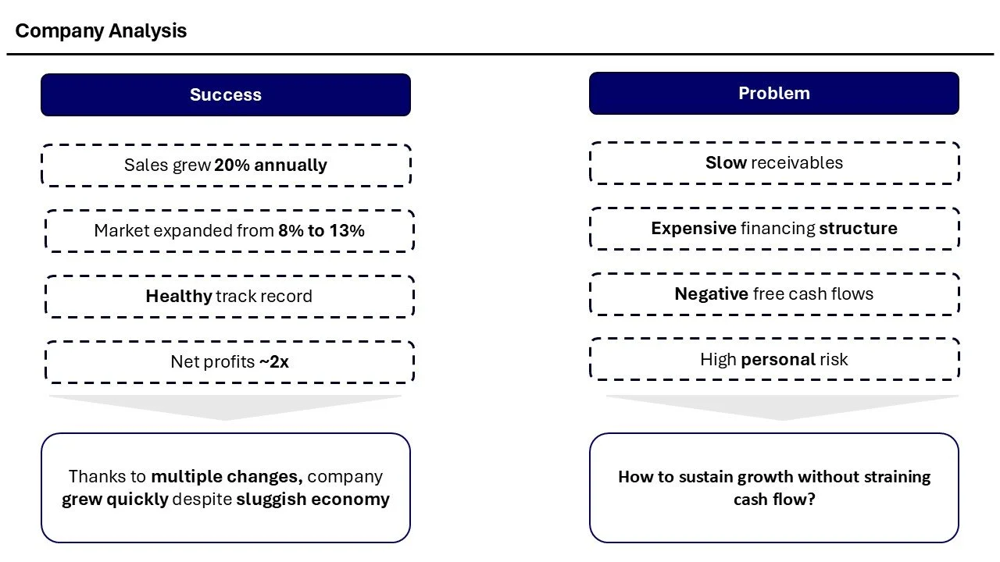
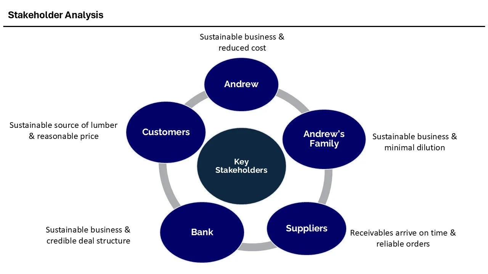
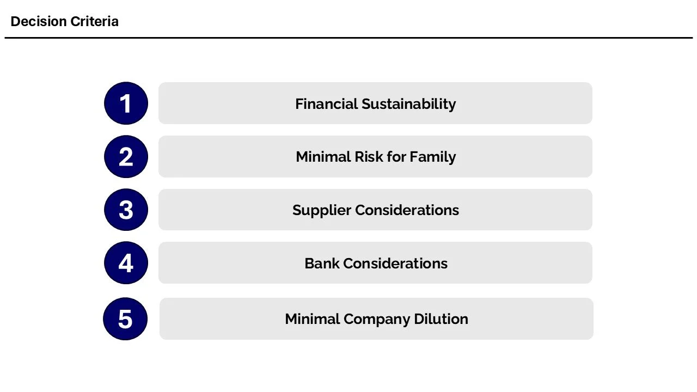
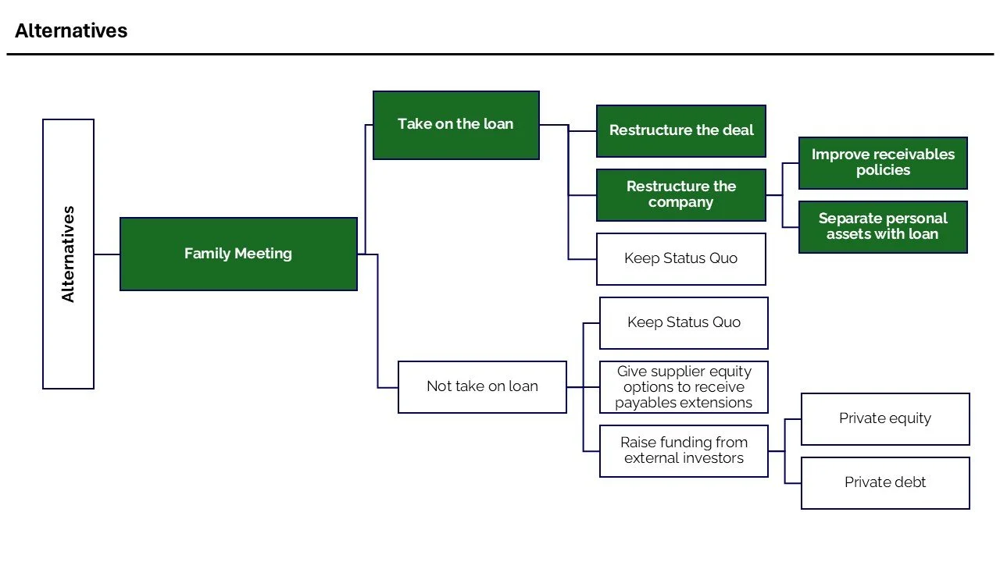
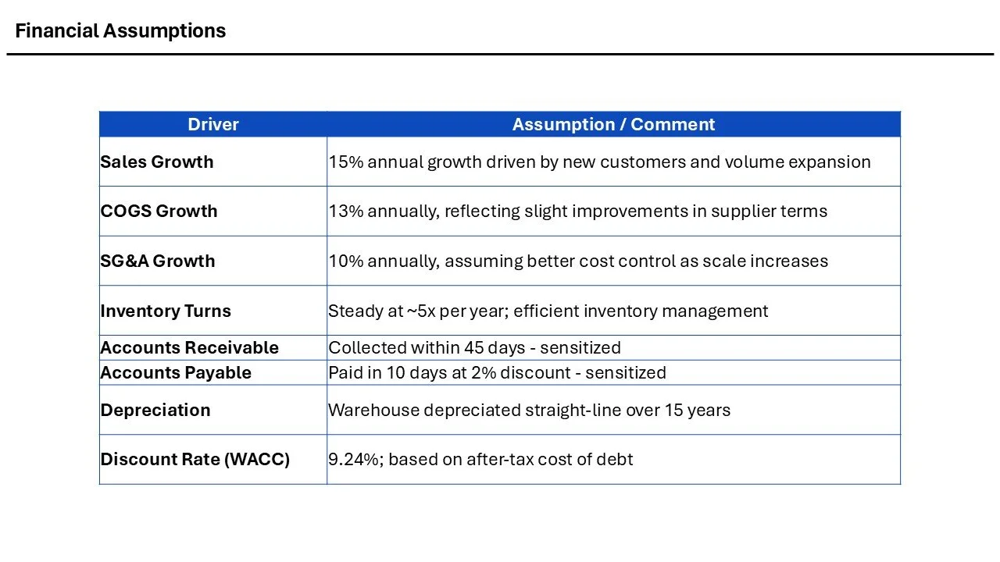
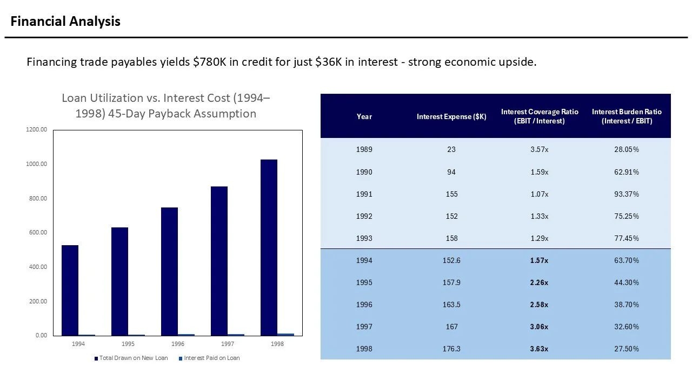
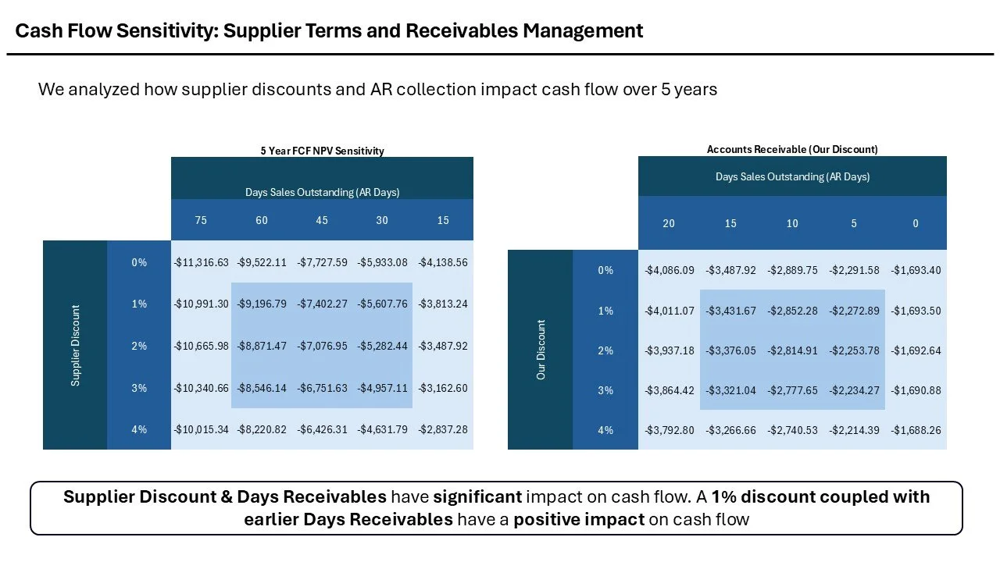
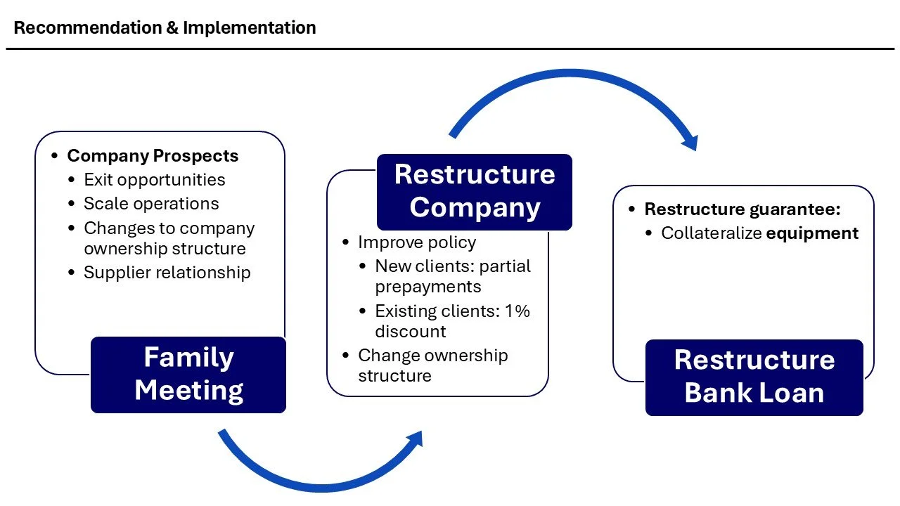
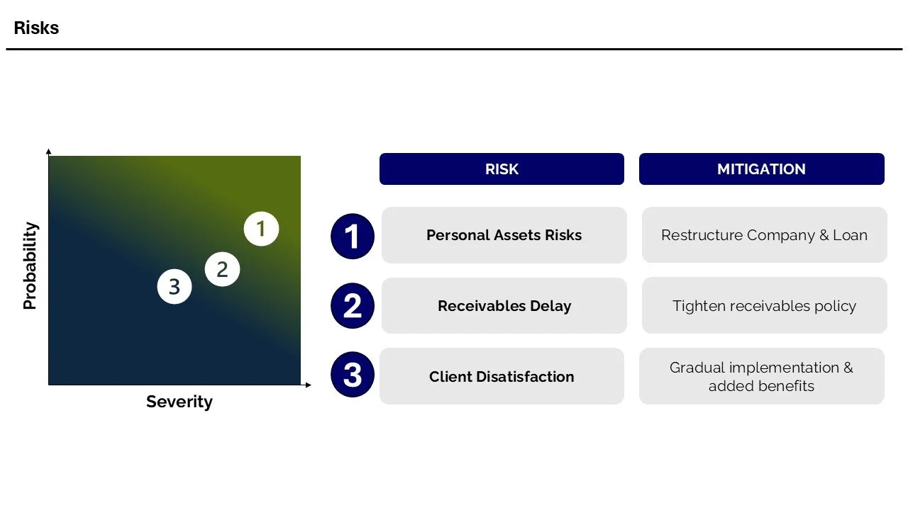